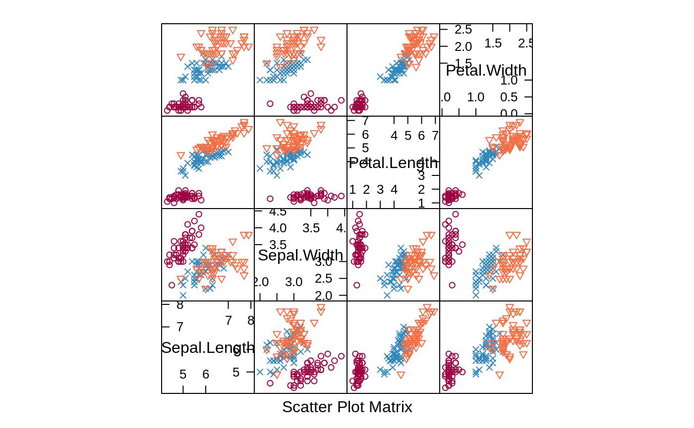
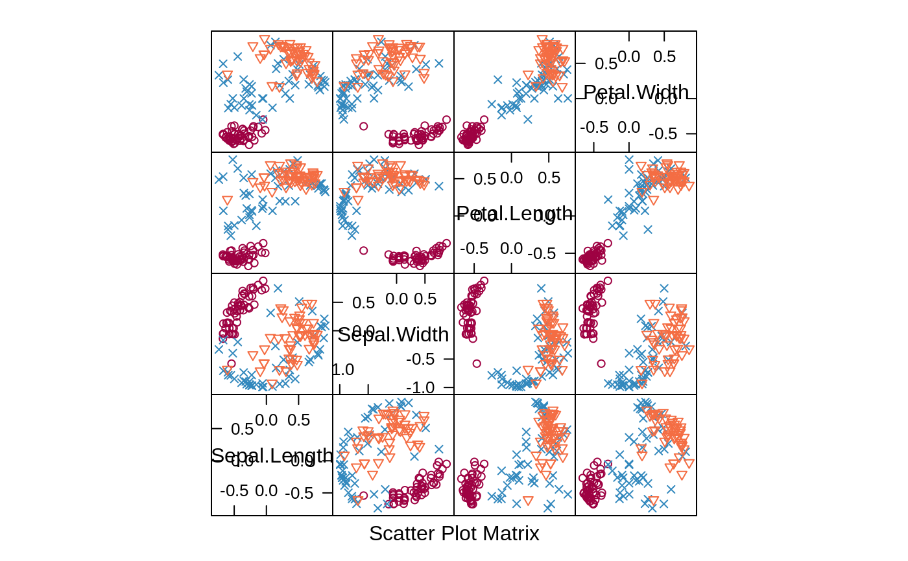

Compute the spatial sign (a projection of a data vector to a
unit length circle). The spatial sign of a vector w is
w /norm(w).
spatialSign(x, ...) # S3 method for default spatialSign(x, na.rm = TRUE, ...) # S3 method for matrix spatialSign(x, na.rm = TRUE, ...) # S3 method for data.frame spatialSign(x, na.rm = TRUE, ...)
| x | an object full of numeric data (which should probably be scaled). Factors are not allowed. This could be a vector, matrix or data frame. |
|---|---|
| ... | Not currently used. |
| na.rm | A logical; should missing data be removed when computing the norm of the vector? |
A vector, matrix or data frame with the same dim names of the original data.
Serneels et al. Spatial sign preprocessing: a simple way to impart moderate robustness to multivariate estimators. J. Chem. Inf. Model (2006) vol. 46 (3) pp. 1402-1409
#> [1] -0.32230088 0.09448167 -0.42991811 0.82074751 0.16952670#> [,1] [,2] [,3] #> [1,] -0.3445240 -0.1282361 -0.92997779 #> [2,] 0.2504238 0.7766995 0.57794961 #> [3,] 0.8830219 0.4662449 -0.05373972 #> [4,] 0.6796389 -0.7332979 -0.01911061# should fail since the fifth column is a factor try(spatialSign(iris), silent = TRUE) spatialSign(iris[,-5])#> Sepal.Length Sepal.Width Petal.Length Petal.Width #> 1 0.8037728 0.5516088 0.2206435 0.03152050 #> 2 0.8281329 0.5070201 0.2366094 0.03380134 #> 3 0.8053331 0.5483119 0.2227517 0.03426949 #> 4 0.8000302 0.5391508 0.2608794 0.03478392 #> 5 0.7909650 0.5694948 0.2214702 0.03163860 #> 6 0.7841750 0.5663486 0.2468699 0.05808704 #> 7 0.7801094 0.5766026 0.2374246 0.05087670 #> 8 0.8021849 0.5454857 0.2406555 0.03208740 #> 9 0.8064237 0.5315065 0.2565893 0.03665562 #> 10 0.8180312 0.5175299 0.2504177 0.01669451 #> 11 0.8037352 0.5507074 0.2232598 0.02976797 #> 12 0.7869910 0.5574520 0.2623303 0.03279129 #> 13 0.8230722 0.5144201 0.2400627 0.01714734 #> 14 0.8025126 0.5598925 0.2052939 0.01866308 #> 15 0.8112086 0.5594542 0.1678363 0.02797271 #> 16 0.7738111 0.5973279 0.2036345 0.05430253 #> 17 0.7942894 0.5736535 0.1912178 0.05883625 #> 18 0.8032741 0.5512666 0.2205066 0.04725142 #> 19 0.8068282 0.5378855 0.2406330 0.04246464 #> 20 0.7796488 0.5809148 0.2293085 0.04586170 #> 21 0.8173379 0.5146202 0.2573101 0.03027177 #> 22 0.7859186 0.5701762 0.2311525 0.06164067 #> 23 0.7757707 0.6071249 0.1686458 0.03372916 #> 24 0.8059779 0.5215151 0.2686593 0.07901744 #> 25 0.7761140 0.5497474 0.3072118 0.03233808 #> 26 0.8264745 0.4958847 0.2644718 0.03305898 #> 27 0.7977821 0.5424918 0.2552903 0.06382256 #> 28 0.8064196 0.5427825 0.2326211 0.03101614 #> 29 0.8160943 0.5336001 0.2197177 0.03138824 #> 30 0.7952406 0.5414404 0.2707202 0.03384003 #> 31 0.8084658 0.5221342 0.2694886 0.03368608 #> 32 0.8222503 0.5177131 0.2284029 0.06090743 #> 33 0.7657831 0.6037905 0.2208990 0.01472660 #> 34 0.7786745 0.5946241 0.1982080 0.02831544 #> 35 0.8176894 0.5173137 0.2503131 0.03337508 #> 36 0.8251230 0.5280787 0.1980295 0.03300492 #> 37 0.8269975 0.5262712 0.1954721 0.03007264 #> 38 0.7852322 0.5769053 0.2243521 0.01602515 #> 39 0.8021241 0.5469028 0.2369912 0.03646019 #> 40 0.8077957 0.5385305 0.2375870 0.03167826 #> 41 0.8003330 0.5602331 0.2080866 0.04801998 #> 42 0.8609386 0.4400353 0.2487156 0.05739590 #> 43 0.7860904 0.5717021 0.2322540 0.03573138 #> 44 0.7888948 0.5522264 0.2524463 0.09466737 #> 45 0.7669390 0.5714447 0.2857224 0.06015208 #> 46 0.8221058 0.5138162 0.2397809 0.05138162 #> 47 0.7772909 0.5791579 0.2438560 0.03048200 #> 48 0.7959478 0.5537028 0.2422450 0.03460643 #> 49 0.7983702 0.5573528 0.2259538 0.03012718 #> 50 0.8122836 0.5361072 0.2274394 0.03249135 #> 51 0.7670110 0.3506336 0.5149931 0.15340221 #> 52 0.7454976 0.3727488 0.5241780 0.17472599 #> 53 0.7551929 0.3392895 0.5362964 0.16417236 #> 54 0.7538492 0.3152460 0.5482539 0.17818253 #> 55 0.7581754 0.3265986 0.5365549 0.17496355 #> 56 0.7223296 0.3548286 0.5702602 0.16474184 #> 57 0.7263485 0.3804682 0.5418790 0.18446945 #> 58 0.7591655 0.3718361 0.5112747 0.15493173 #> 59 0.7630185 0.3352657 0.5318008 0.15029153 #> 60 0.7246023 0.3762358 0.5434518 0.19508524 #> 61 0.7692308 0.3076923 0.5384615 0.15384615 #> 62 0.7392346 0.3758820 0.5262348 0.18794100 #> 63 0.7889275 0.2892734 0.5259517 0.13148792 #> 64 0.7308141 0.3474362 0.5630863 0.16772783 #> 65 0.7591171 0.3931142 0.4880038 0.17622361 #> 66 0.7694544 0.3560162 0.5053134 0.16078153 #> 67 0.7063189 0.3783851 0.5675777 0.18919257 #> 68 0.7567650 0.3522871 0.5349545 0.13047672 #> 69 0.7644424 0.2712537 0.5548372 0.18494574 #> 70 0.7618519 0.3401124 0.5305754 0.14964948 #> 71 0.6985796 0.3788906 0.5683359 0.21312598 #> 72 0.7701185 0.3534970 0.5049958 0.16412362 #> 73 0.7414331 0.2942195 0.5766702 0.17653168 #> 74 0.7365989 0.3381110 0.5675435 0.14490471 #> 75 0.7674170 0.3477358 0.5156083 0.15588157 #> 76 0.7678573 0.3490260 0.5119048 0.16287881 #> 77 0.7646727 0.3148652 0.5397690 0.15743261 #> 78 0.7408858 0.3317399 0.5528998 0.18798594 #> 79 0.7335095 0.3545296 0.5501321 0.18337737 #> 80 0.7866747 0.3588341 0.4830459 0.13801311 #> 81 0.7652185 0.3339135 0.5286965 0.15304371 #> 82 0.7724292 0.3370600 0.5196342 0.14044168 #> 83 0.7643498 0.3558180 0.5139594 0.15814134 #> 84 0.7077953 0.3185079 0.6016260 0.18874540 #> 85 0.6933341 0.3851856 0.5777784 0.19259280 #> 86 0.7152494 0.4053080 0.5364370 0.19073316 #> 87 0.7545734 0.3491310 0.5293276 0.16893434 #> 88 0.7753002 0.2830461 0.5414795 0.15998258 #> 89 0.7299244 0.3910309 0.5344090 0.16944674 #> 90 0.7471419 0.3396100 0.5433760 0.17659719 #> 91 0.7233712 0.3419573 0.5786969 0.15782644 #> 92 0.7326039 0.3602970 0.5524554 0.16813860 #> 93 0.7626299 0.3418686 0.5259517 0.15778550 #> 94 0.7698688 0.3541396 0.5081134 0.15397376 #> 95 0.7354428 0.3545885 0.5515821 0.17072780 #> 96 0.7323962 0.3854717 0.5396603 0.15418867 #> 97 0.7344605 0.3736729 0.5411814 0.16750853 #> 98 0.7572810 0.3542121 0.5252110 0.15878473 #> 99 0.7825805 0.3836179 0.4603415 0.16879188 #> 100 0.7431482 0.3650553 0.5345452 0.16948994 #> 101 0.6538775 0.3425072 0.6227404 0.25947519 #> 102 0.6905251 0.3214514 0.6071859 0.22620651 #> 103 0.7149140 0.3020764 0.5940835 0.21145345 #> 104 0.6927680 0.3188932 0.6157937 0.19793370 #> 105 0.6861902 0.3167032 0.6122928 0.23224900 #> 106 0.7095371 0.2800804 0.6161769 0.19605630 #> 107 0.6705412 0.3421128 0.6158031 0.23263673 #> 108 0.7136656 0.2835110 0.6159032 0.17597233 #> 109 0.7141413 0.2664706 0.6182118 0.19185884 #> 110 0.6919879 0.3459939 0.5862675 0.24027357 #> 111 0.7156264 0.3523084 0.5614915 0.22019275 #> 112 0.7157655 0.3019636 0.5927433 0.21249287 #> 113 0.7171815 0.3164036 0.5800733 0.22148252 #> 114 0.6925518 0.3037508 0.6075016 0.24300063 #> 115 0.6776792 0.3271555 0.5958904 0.28041899 #> 116 0.6958989 0.3479494 0.5762913 0.25008866 #> 117 0.7061047 0.3258945 0.5974732 0.19553670 #> 118 0.6929910 0.3419956 0.6029922 0.19799743 #> 119 0.7060062 0.2383917 0.6326549 0.21088496 #> 120 0.7271258 0.2666128 0.6059382 0.18178146 #> 121 0.7055893 0.3272298 0.5828782 0.23519645 #> 122 0.6830792 0.3415396 0.5976943 0.24395687 #> 123 0.7148654 0.2599511 0.6220258 0.18567933 #> 124 0.7312246 0.3133820 0.5687303 0.20892133 #> 125 0.6959560 0.3427843 0.5920820 0.21813547 #> 126 0.7152945 0.3179087 0.5960788 0.17882363 #> 127 0.7278520 0.3287073 0.5634983 0.21131186 #> 128 0.7117121 0.3500224 0.5717032 0.21001342 #> 129 0.6959400 0.3044738 0.6089475 0.22835532 #> 130 0.7308986 0.3045411 0.5887794 0.16242190 #> 131 0.7276616 0.2753314 0.5998292 0.18683203 #> 132 0.7157900 0.3443040 0.5798805 0.18121266 #> 133 0.6941775 0.3037026 0.6074053 0.23862350 #> 134 0.7236600 0.3216267 0.5858200 0.17230001 #> 135 0.6938541 0.2957411 0.6369808 0.15924521 #> 136 0.7315440 0.2850171 0.5795348 0.21851314 #> 137 0.6701748 0.3616817 0.5957110 0.25530470 #> 138 0.6980480 0.3381170 0.5998850 0.19632600 #> 139 0.7106691 0.3553345 0.5685352 0.21320072 #> 140 0.7241526 0.3253439 0.5667281 0.22039426 #> 141 0.6999704 0.3238669 0.5850499 0.25073566 #> 142 0.7333789 0.3294891 0.5420626 0.24445962 #> 143 0.6905251 0.3214514 0.6071859 0.22620651 #> 144 0.6919350 0.3256165 0.6003554 0.23403685 #> 145 0.6891487 0.3394315 0.5862907 0.25714504 #> 146 0.7215572 0.3230853 0.5600146 0.24769876 #> 147 0.7296536 0.2895451 0.5790902 0.22005426 #> 148 0.7165390 0.3307103 0.5732312 0.22047353 #> 149 0.6746707 0.3699807 0.5876164 0.25028107 #> 150 0.6902592 0.3509792 0.5966647 0.21058754